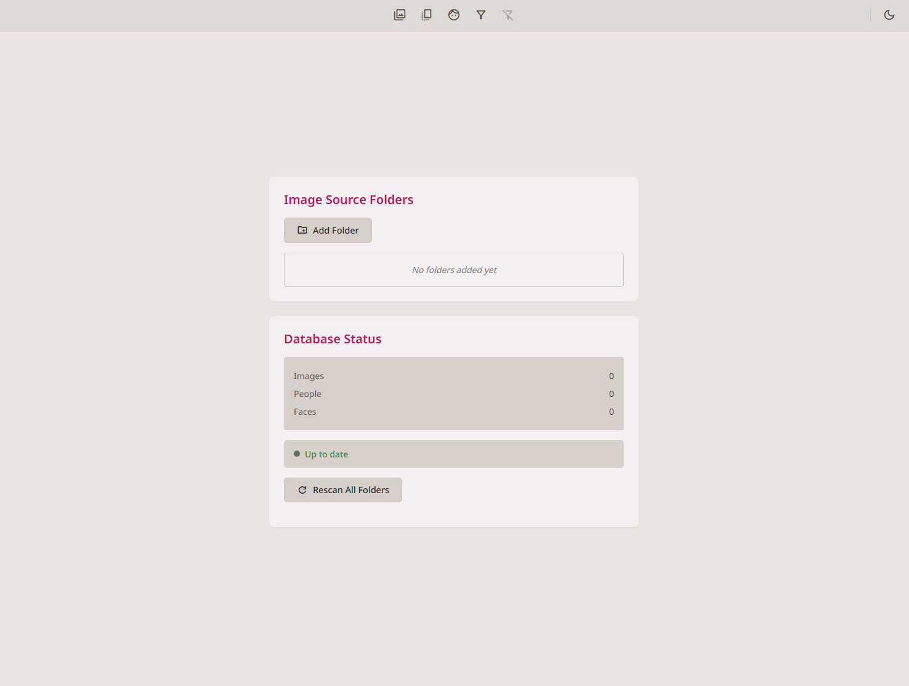
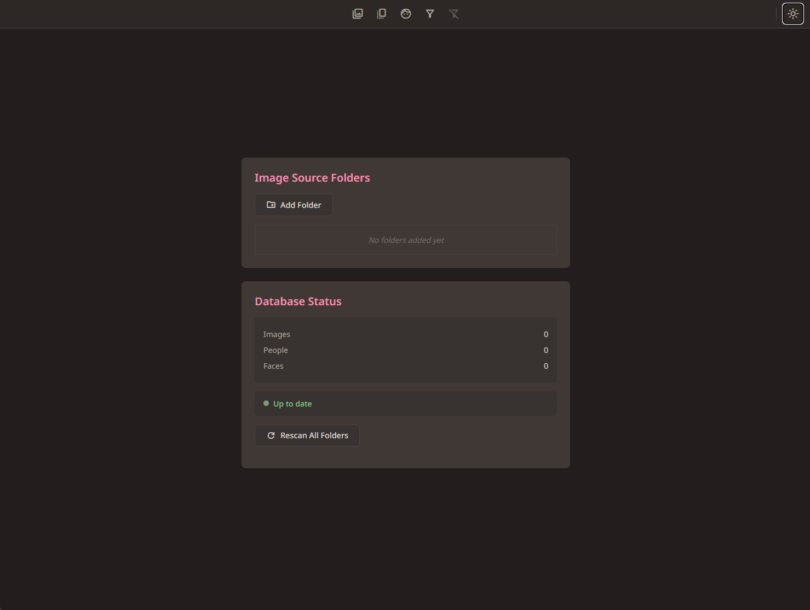
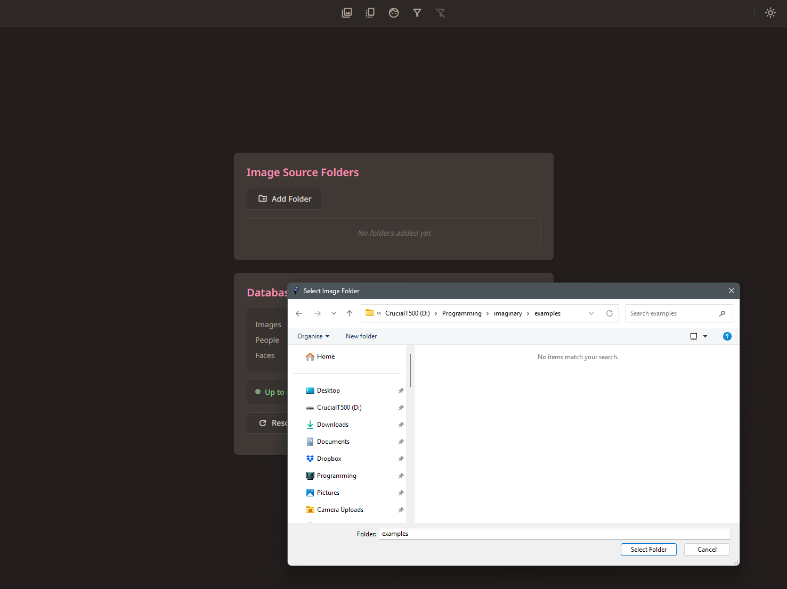
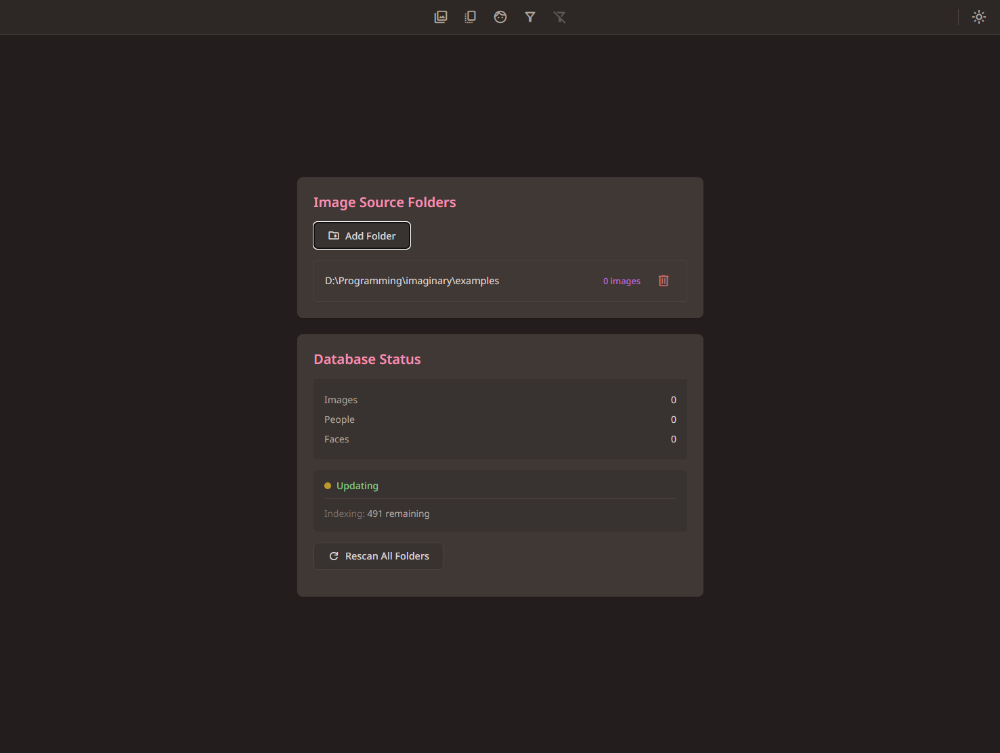
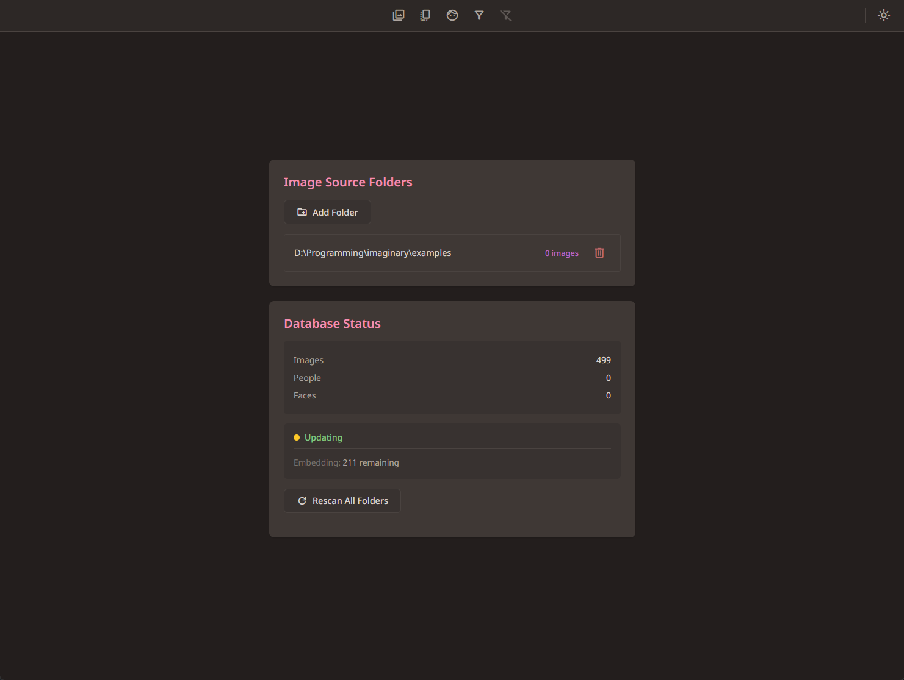

Getting started — Adding your first photos
← Back to contents
0.1. First launch

When you first open Imaginary, you see the Database screen in the default light theme. There are no folders or photos yet — this is where you tell Imaginary where your photos live.
0.2. Switching to dark theme

Click the sun/moon icon in the top-right corner to switch to the dark theme. All the screenshots in this tutorial use the dark theme.
0.3. Adding a folder

Click “Add Folder” to open your system’s folder picker. Navigate to the folder that contains your photos and select it. Note: on some systems the folder picker may open ‘behind’ the browser window — check your taskbar if nothing seems to happen.
0.4. Indexing begins

Once you’ve selected a folder, Imaginary starts scanning it for images. The status changes to “Updating” and shows how many files are left to index.
0.5. Processing your photos

After indexing, Imaginary generates thumbnails and computes embeddings for semantic search. This runs in the background — you can start browsing as soon as the first thumbnails appear.